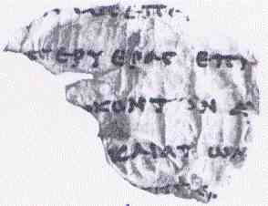

Greek Deuteronomy Fragment (4QLXXDeut)

- Manuscript
- Greek Deuteronomy Fragment (4QLXXDeut)
- Manuscript ID
- 4QLXXDeut / 4Q122
- Work
- Deuteronomy
- Category
- Biblical
- Cave
- Qumran Cave 4
- Location
- Qumran, Judaean Desert
- Date Approx
- c. 200-150 BCE
- Period
- Early Hellenistic
- Language
- Greek
- Script
- Greek
- Completeness
- Fragment
- Preserved Passages
- Description
- A Greek fragment of Deuteronomy from Qumran Cave 4, catalogued as 4Q122 (DJD IX), preserving only Deuteronomy 11:4 (the drowning of Pharaoh's army). Among the earliest Greek biblical fragments from Qumran.
- Significance
- A tiny but very early Greek witness to Deuteronomy 11.
- Related Books
Awaiting Review Not yet checked against scholarly sources. Treat its claims as provisional until this entry is reviewed. About verification
Sources: https://en.wikipedia.org/wiki/List_of_the_Dead_Sea_Scrolls
http://khazarzar.skeptik.net/books/qumran/inv.htm
http://khazarzar.skeptik.net/books/qumran/inv.htm
Last reviewed: not yet reviewed